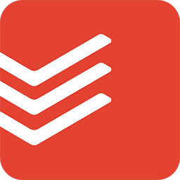

Forest
Forest, öğrencilere telefonlarını belirli bir süre boyunca kullanmamaları konusunda teşvik eden bir uygulamadır. Belirli bir süre boyunca telefonunuzu kullanmazsanız, sanal bir ağaç büyür. Bu, odaklanma sürenizi artırmak için görsel bir motivasyon sağlar.

Todoist
Todoist gibi görev yönetimi uygulamalası, öğrencilere günlük görevlerini planlama ve takip etme konusunda yardımcı olur. Görevleri önceliklendirmek, hatırlatmalar eklemek ve tamamlandıkça işaretlemek, öğrencilere organize olmalarında yardımcı olur.
Trello
Trello, proje yönetimi ve grup çalışmaları için kullanılan bir görsel yönetim aracıdır. Öğrenciler, projelerini kartlar, listeler ve panolar aracılığıyla organize edebilirler. Bu, iş akışlarını düzenlemelerine ve hedeflerine ulaşmalarına yardımcı olabilir.